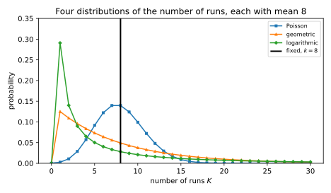
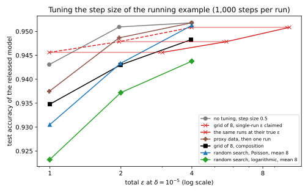

38 Hyperparameter tuning and private selection
38.1 Why this matters
Stochastic gradient descent (SGD) with per-example clipping and Gaussian noise, run once with a fixed step size, clipping norm, batch size and number of steps, satisfies differential privacy (DP) with the \((\varepsilon, \delta)\) its accountant reports; this is DP-SGD, and its guarantee covers one training run. Nobody trains once. You try a grid of step sizes, score each model on a validation set and ship the best, and every run and every score touched private data. How much does the search leak, and how do you pay for it honestly?
Releasing the best of \(k\) private runs can cost as much as releasing all \(k\), and composition, which charges for every run, turns a grid of 10 DP-SGD runs of this part’s running example from \(\varepsilon = 6.71\) into 27.23. But one change to the procedure changes the answer: draw the number of runs at random, from a suitable distribution, before the search starts. Then the best-of release costs a constant multiple of one run plus a term that grows only with the logarithm of the expected number of runs. For 10 runs in expectation, the cost falls from 27.23 to between 10.08 and 13.67, depending on the distribution, and for 1,000 runs from 1,035.93 to 13.46.
The one idea: the model you ship depends on every run, and a fixed number of runs lets an attacker test for the event “every run came out badly”, whose likelihood ratio is the product of the per-run ratios. A random number of runs explains that event mostly by “there happened to be few runs”, which does not depend on the data.
38.2 The best of k runs costs k runs
A choice among eight step sizes carries at most three bits, so why charge for it? Because the released model is not just the choice: it is a whole private run, picked because of how it came out. The worst case is easy to build. Let one run be randomized response on two outcomes, “good” and “bad”: on a dataset \(D\) it comes out good with probability \(1/(1 + e^\varepsilon)\), on its neighbour \(D'\) with probability \(e^\varepsilon/(1 + e^\varepsilon)\), so one run is exactly \(\varepsilon\)-DP. The best of \(k\) runs is bad only if every run is bad. The runs are independent, so the probability of that event is a product of \(k\) per-run probabilities on each dataset, and its likelihood ratio is the product of \(k\) ratios of \(e^\varepsilon\) each: \[\frac{P_D[\text{best of } k \text{ is bad}]}{P_{D'}[\text{best of } k \text{ is bad}]} = e^{k\varepsilon}. \tag{38.1}\] Here the best of \(k\) is exactly \(k\varepsilon\)-DP, no better than releasing all \(k\) runs. With \(\varepsilon = 1\) and \(k = 10\), the whole loss sits on one rare event: the privacy loss is \(-0.0446\) with probability 0.9564 and 10 with probability 0.0436 (Figure 38.1, right). An attacker who checks whether the released model is bad gets a likelihood ratio of \(e^{10}\) whenever the test fires.

This is not a contrived corner: a DP-SGD run that sometimes diverges is a run with a “bad” outcome whose probability depends a little on the data, and best-of-\(k\) multiplies those small dependences. A particular search may leak much less, but no analysis that knows only each run’s guarantee can promise it, so a cheaper guarantee needs a different procedure.
Tuning without noise and then training once privately does not help: the winning hyperparameters are a non-private function of the data, which the final run’s \(\varepsilon\) does not cover. Papernot & Steinke (2022) build a model whose best regularization weight alone reveals whether a few outliers were in the training set.
The safe baseline is composition: charge every run. For DP-SGD this is simple, because the accountant charges each step the same whatever weights it is applied to, so \(k\) runs of \(T\) steps cost exactly one run of \(kT\) steps. Table 38.1 applies it to the running example (\(q = 0.01\), \(\sigma = 1\), 10,000 steps, one run at \(\varepsilon = 6.71\), \(\delta = 10^{-5}\)).
| Runs \(k\) | 1 | 3 | 10 | 30 | 100 |
|---|---|---|---|---|---|
| \(\varepsilon\) of \(k\) runs at \(\sigma = 1\) | 6.71 | 12.73 | 27.23 | 58.25 | 145.17 |
| Ratio to one run | 1.00 | 1.90 | 4.06 | 8.68 | 21.63 |
| \(\sigma\) per run for a total of 6.71 | 1 | 1.46 | 2.45 | 4.12 | 7.44 |
Ten runs cost 4.06 times one run, not 10, because the conversion to \((\varepsilon, \delta)\) pays its \(\ln(1/\delta)\) term once, but the cost still grows roughly linearly: from 30 to 100 runs, by a factor 2.5. Keeping the total fixed instead means \(\sigma = 2.45\) per run for 10 runs, and accuracy falls steeply as noise rises. For two or three candidates composition is fine; beyond a few runs, the methods below pull away (Figure 38.2).
38.3 Random stopping
Liu & Talwar (2019) found the change that breaks the \(k\varepsilon\) barrier. After each run, flip a coin and stop with probability \(\gamma\); then release the best run seen. The number of runs is geometric with mean \(1/\gamma\), and if each run is \(\varepsilon\)-DP, the release is \(3\varepsilon\)-DP whatever \(\gamma\) is.
Why a constant, and why 3? Write \(p\) for the probability that one run produces outcome \(y\), \(p_>\) for the probability that it produces something strictly better, and \(p_\ge = p_> + p\). Averaging the best-of-\(k\) probabilities over the geometric number of runs gives \[P[\text{release} = y] = \frac{\gamma\,p}{\big(\gamma + (1 - \gamma)p_>\big)\big(\gamma + (1 - \gamma)p_\ge\big)}. \tag{38.2}\] Each of \(p\), \(p_>\) and \(p_\ge\) is the probability of an event about one run, so each moves by at most a factor \(e^\varepsilon\) between neighbours. The constant \(\gamma\), which does not depend on the data, cannot amplify those moves. Three factors, each moving by at most \(e^\varepsilon\): the ratio is at most \(e^{3\varepsilon}\). Compare the fixed-\(k\) case, where the ratio was a \(k\)-th power. The event “every run was bad” is now mostly the event “the coin stopped early”.
The 3 can be approached: on a three-outcome mechanism that is exactly 1-DP, the release reaches 2.9987. With two outcomes, as in randomized response, nothing is better than the best outcome, so only two factors move: at \(\varepsilon = 1\) the exact value rises from 1.7957 at \(\gamma = 0.1\) to 1.9977 at \(\gamma = 0.001\) (Figure 38.1, left).
The price is paid in runs. The release misses the top fraction \(\pi\) of a single run’s outcomes with probability at most \(\gamma/\pi\). With a grid of 8 and \(\gamma = 1/8\), a mean of 8 runs, the chance of never trying the best eighth is 0.4667; it takes \(\gamma = 1/80\), a mean of 80 runs, to bring it to 0.0805. The geometric distribution is spread out, stopping after one run with probability 1/8 at \(\gamma = 1/8\), and that spread is what buys the privacy.
38.4 Rényi bounds for DP-SGD
DP-SGD is not usefully \(\varepsilon\)-DP for any small \(\varepsilon\). Its guarantee is a curve in Rényi differential privacy (RDP): a bound \(\varepsilon(\lambda)\) on the Rényi divergence of order \(\lambda\) between its outputs on neighbours, where curves add under composition and are converted to \((\varepsilon, \delta)\) once, at the best order (Rényi differential privacy). Papernot & Steinke (2022) extended random stopping to RDP and to a family of distributions for the number of runs \(K\), the truncated negative binomial with a shape parameter \(\eta > -1\). The geometric distribution is \(\eta = 1\); \(\eta = 0\) is the logarithmic distribution. For a run with RDP curve \(\varepsilon(\lambda)\), the best of \(K\) runs has curve at most \[\varepsilon(\lambda) + (1 + \eta)\Big(1 - \frac1{\hat\lambda}\Big)\varepsilon(\hat\lambda) + \frac{(1 + \eta)\ln(1/\gamma)}{\hat\lambda} + \frac{\ln\mathbb E[K]}{\lambda - 1}, \tag{38.3}\] for any second order \(\hat\lambda \ge 1\) you choose, where \(\gamma\) is the distribution’s other parameter, set by the mean.
Each term pays for something. The first is one run, the floor, since the release is a run. The last is the number of runs, and it is logarithmic: ten times more runs adds \(\ln 10/(\lambda - 1)\). The middle terms pay for the tail of \(K\), how well an attacker can tell “many runs, all bad” from “few runs”, as a constant multiple of the run’s own privacy at another order. For a pure \(\varepsilon\)-DP run the bound becomes \((2 + \eta)\varepsilon\): \(3\varepsilon\) for the geometric, as before, and \(2\varepsilon\) for the logarithmic.
For a Poisson number of runs with mean \(\mu\), the bound is \[\varepsilon(\lambda) + \mu\hat\delta + \frac{\ln\mu}{\lambda - 1}, \tag{38.4}\] where the run must be \((\hat\varepsilon, \hat\delta)\)-DP with \(e^{\hat\varepsilon} \le 1 + 1/(\lambda - 1)\). The tail term \(\mu\hat\delta\) is linear in \(\mu\), but it is multiplied by the run’s \(\hat\delta\) at a small \(\hat\varepsilon\), so it is small only when one run is very private.
On the running example (Table 38.2, Figure 38.2), the logarithmic distribution costs 10.08 for 10 runs in expectation, 1.5 times one run, and going to 1,000 runs adds only 3.38. The Poisson bound starts well but grows nearly linearly, because one run at \(\varepsilon = 6.71\) is far from private enough at the small \(\hat\varepsilon\) the condition demands.
| Expected runs | 3 | 10 | 30 | 100 | 1,000 |
|---|---|---|---|---|---|
| Composition | 12.73 | 27.23 | 58.25 | 145.17 | 1035.93 |
| Poisson | 8.93 | 13.67 | 26.43 | 67.77 | 302.57 |
| Geometric (\(\eta = 1\)) | 9.22 | 11.31 | 12.85 | 14.32 | 16.76 |
| \(\eta = 0.5\) | 9.03 | 10.75 | 11.98 | 13.15 | 15.09 |
| Logarithmic (\(\eta = 0\)) | 8.75 | 10.08 | 11.04 | 11.95 | 13.46 |

Smaller \(\eta\) gives a cheaper bound but a more skewed \(K\), which often runs only a few candidates. With mean 10, the logarithmic distribution stops after one run with probability 0.2692, against 0.1000 for the geometric; the Poisson is concentrated near its mean, with \(P[K \le 1] = 4.99 \times 10^{-4}\) (Figure 38.3). Section 38.6 shows what that costs.

These are upper bounds for any run with the given curve, so they can be loose for a particular one: on randomized response with \(\varepsilon = 0.5\) and a logarithmic number of runs with mean 10, at the orders where conversions usually land, Equation 38.3 was two to three times above the exact divergence. They also have conditions. Each run must draw its candidate independently from a distribution fixed in advance, typically uniform on the grid: this is random search. Adaptive methods that choose the next candidate from the scores so far, such as Bayesian optimization, are not covered and need adaptive composition. And the score that ranks the runs must itself be part of each run’s private output.
38.5 The validation score, and selecting among fixed candidates
That last condition is easy to miss: ranked by an exact validation accuracy, the validation records are not protected at all. Score each run instead by its count of correct predictions on a held-out validation set, plus Gaussian noise of standard deviation \(\sigma_{\text{val}}\). The count is the right score because adding or removing one validation record changes it by at most 1, while an accuracy divides by the number of records, itself private. The noisy count is a Gaussian mechanism with RDP curve \(\lambda/(2\sigma_{\text{val}}^2)\).
It also need not add to the cost. Each record sits in exactly one of the training and validation sets, and a pair of neighbours differs in one record, so the procedure’s cost is the larger of the cost in training records and the cost in validation records, not their sum, and the scores add nothing as long as their cost stays below the training cost. With \(\sigma_{\text{val}} = 20\) correct predictions, one noisy count alone has \(\varepsilon = 0.182\) and eight composed \(0.546\). In the experiment below, eight DP-SGD runs at \(\sigma = 2.07\) cost 1.994 together, and adding the eight noisy counts leaves the total at 1.994, because the counts’ curve stays below the training curve at the orders that matter.
When the candidates do not depend on the private training data, such as public pretrained checkpoints, only the choice is private. That is a pure selection problem, and the exponential mechanism of Selection solves it: pick candidate \(r\) with probability proportional to \(e^{\varepsilon u(r)/2}\), where \(u(r)\) is its count of correct predictions. It is \(\varepsilon\)-DP, and its expected shortfall from the best count among \(k\) candidates is at most \(2(\ln k + 1)/\varepsilon\) correct predictions, logarithmic in \(k\) with no linear privacy cost. Table 38.3 runs it on eight trained models whose counts out of 5,000 range from 4,123 to 4,694, the best beating the second by 13.
| \(\varepsilon_{\text{sel}}\) | \(P[\text{best}]\) | Expected gap (correct predictions) | Accuracy gap |
|---|---|---|---|
| 0.01 | 0.2478 | 87.62 | 1.752% |
| 0.1 | 0.6484 | 5.61 | 0.112% |
| 1 | 0.9985 | 0.02 | 0.000% |
At \(\varepsilon_{\text{sel}} = 0.1\) the choice costs about a tenth of a point of accuracy. Selection is cheap; training is not, and for candidates trained on private data you still pay for every run by one of the methods above.
38.6 Tuning the running example
To see the trade-offs together, tune the step size of the running example (the network of DP-SGD, \(n = 10{,}000\) training records, \(q = 0.01\), \(C = 0.5\)) over eight values from 0.0625 to 8. To keep the script fast, each run is 1,000 steps rather than 10,000. Scores are noisy counts on 5,000 validation records with \(\sigma_{\text{val}} = 20\). The whole procedure gets \(\varepsilon = 2\) at \(\delta = 10^{-5}\), and each strategy picks the noise multiplier \(\sigma\) that keeps it within that budget (Table 38.4).
| Strategy | \(\sigma\) | \(\varepsilon\) of one run | Total \(\varepsilon\) | Test accuracy | Runs on private data |
|---|---|---|---|---|---|
| No tuning: step size 0.5 from DP-SGD | 1.03 | 1.97 | 1.97 | \(0.9509 \pm 0.0015\) | 1 |
| Grid of 8, single-run \(\varepsilon\) reported | 1.03 | 1.97 | 5.60 | \(0.9479 \pm 0.0030\) | 8 |
| Tune on proxy data, then one run | 1.03 | 1.97 | 1.97 | \(0.9487 \pm 0.0025\) | 1 |
| Grid of 8, composition | 2.07 | 0.66 | 1.99 | \(0.9430 \pm 0.0022\) | 8 |
| Random search, Poisson, mean 8 | 1.53 | 0.98 | 1.99 | \(0.9433 \pm 0.0060\) | 8.01 |
| Random search, logarithmic, mean 8 | 1.36 | 1.17 | 2.00 | \(0.9372 \pm 0.0200\) | 7.95 |
The honest searches cost about a point: 0.9430 for composition and 0.9433 for Poisson random search, against 0.9509 without tuning. The second row is the common reporting bug: run the grid, report the single run’s 1.97, spend up to 5.60. A paper reporting “0.948 at \(\varepsilon = 1.97\)” looks better than one reporting “0.943 at \(\varepsilon = 1.99\)”, yet in Table 38.4 they are the same algorithm, accounted differently.
Even misreported, the grid search does worse than not tuning. Step size 0.5 is the best of the grid, and the noisy count sometimes picks a neighbour; it is the best because DP-SGD chose its settings with knowledge of this very task, a leak of exactly this chapter’s kind. On a new task you would have no such guess.
The random-\(K\) strategies show the trade-off of Section 38.4. Poisson random search allows \(\sigma = 1.53\) instead of 2.07, but misses any given step size with probability 0.3679 and varies more, so at this small grid the effects roughly cancel. The logarithmic distribution allows the least noise, \(\sigma = 1.36\), but with mean 8 it stops after one run with probability 0.2907 and ships a random step size, so it is the least accurate and most variable. Papernot & Steinke also found the Poisson distribution best in their small search. Tuning on a proxy task, built the same way with a different teacher, costs one private run and reaches 0.9487.

Figure 38.4 repeats the comparison at \(\varepsilon = 1\) and 4, with noisier points.
38.7 What to do and what to report
The cheapest fix is upstream. In Table 38.4, the two strategies that spend the whole budget on one private run beat every honest search. That will not always hold, since a poor guess can be far worse than a noisy search, but it says where to start: get hyperparameters from public data, proxy data or similar tasks, and shrink what is left. Below the typical gradient norm only the product of step size and clipping norm matters (DP-SGD), so one of the two need not be searched.
Search the rest privately, and fix the search before touching the data: candidates, distribution of the number of runs, score, validation set. The random-\(K\) theorems are about a procedure, and an engineer who looks at the first results and decides to “try a few more” has changed it. Then account for the whole search: compose for a few candidates; for more, use random search with Equation 38.4 when each run is already very private and the search is moderate, or Equation 38.3 for many runs. Every run on the private data counts, including crashed runs, debugging runs and evaluations used for early stopping.
Finally, report two numbers: the \(\varepsilon\) of the released run, and the \(\varepsilon\) of the whole procedure with how it was computed. For the Poisson row of Table 38.4 a complete report reads: “DP-SGD with Poisson sampling rate 0.01, clipping norm 0.5, noise multiplier 1.53, 1,000 steps; one run satisfies \((0.98, 10^{-5})\)-DP. The step size was selected by random search over \(\{0.0625, 0.125, \dots, 8\}\) with a Poisson number of runs with mean 8, scored by correct predictions on a disjoint validation set of 5,000 records with Gaussian noise of standard deviation 20; the whole procedure satisfies \((1.99, 10^{-5})\)-DP by the Rényi bound of Papernot & Steinke (2022, Theorem 6), add/remove neighbours, record level.”
An audit will not catch a missing tuning charge: it tests the released model, not how it was chosen.
38.8 Code
The best-of-\(K\) formula is one line once you have the generating function \(f(x) = \mathbb E[x^K]\) of the number of runs: the best of \(K\) runs is bad exactly when all runs are bad, with probability \(f(P[\text{bad}])\). This snippet computes the exact \(\varepsilon\) for randomized response with a fixed and a geometric number of runs:
from collections.abc import Callable
from math import exp, log
def best_of_rr_epsilon(eps: float, f: Callable[[float], float]) -> float:
"""Exact epsilon of releasing the best of K randomized-response runs, f(x) = E[x^K]."""
bad_d = exp(eps) / (1 + exp(eps)) # one run comes out bad on D
bad_d2 = 1 / (1 + exp(eps)) # ... and on its neighbour D'
# The best is bad only if every run is bad: probability f(P[bad]).
out_d = [f(bad_d), 1 - f(bad_d)]
out_d2 = [f(bad_d2), 1 - f(bad_d2)]
return max(abs(log(a / b)) for a, b in zip(out_d, out_d2))
def fixed(k: int) -> Callable[[float], float]:
return lambda x: x**k
def geometric(gamma: float) -> Callable[[float], float]:
"""Stop after each run with probability gamma; the mean number of runs is 1/gamma."""
return lambda x: gamma * x / (1 - (1 - gamma) * x)
print(f"{best_of_rr_epsilon(1.0, fixed(10)):.4f}") # 10.0000
print(f"{best_of_rr_epsilon(1.0, geometric(0.1)):.4f}") # 1.7957
print(f"{best_of_rr_epsilon(1.0, geometric(0.001)):.4f}") # 1.9977For DP-SGD, the full edition’s script, hyperparameter_tuning.py, has the bounds: tuned_epsilon(q, sigma, steps, strategy) gives the total \(\varepsilon\) of a search, with strategy one of ("fixed", k), ("poisson", mean) or ("tnb<η>", mean), and sigma_for_tuning(q, steps, eps, strategy) the noise multiplier for a budget. Running it reproduces every number in this chapter (two to four minutes):
uv run python code/part05-dp-ml/hyperparameter_tuning.py38.9 Cheat sheet
| Result | Formula or value | Conditions |
|---|---|---|
| Best of a fixed \(k\) | Up to \(k\) times one run; composition’s bound is attained in the worst case | Any runs; for DP-SGD, \(k\) runs of \(T\) steps cost one run of \(kT\) |
| Random stopping | \(3\varepsilon\)-DP; misses the top fraction \(\pi\) with probability \(\le \gamma/\pi\) | \(\varepsilon\)-DP runs, geometric \(K\) with mean \(1/\gamma\) |
| Truncated negative binomial | One run + constant × one run at order \(\hat\lambda\) + \(\ln\mathbb E[K]/(\lambda - 1)\); pure DP: \((2 + \eta)\varepsilon\) | Random search, distribution of \(K\) fixed in advance |
| Poisson | \(\varepsilon(\lambda) + \mu\hat\delta + \ln\mu/(\lambda - 1)\) | Good when each run is very private |
| Running example, 10 runs | 27.23 (composition), 13.67 (Poisson), 10.08 (logarithmic) | One run 6.71 |
| Validation score | Noisy count of correct predictions; cost is the larger of training and validation cost | Disjoint training and validation sets |
| Fixed candidates | Exponential mechanism, gap \(\le 2(\ln k + 1)/\varepsilon\) correct predictions | Candidates independent of the private training data |
Rules of thumb
- The best of \(k\) runs is not cheaper than \(k\) runs unless \(k\) is random. Report the cost of the search, not of the released run.
- Small search at a small per-run budget: Poisson random search. Large search: the logarithmic or \(\eta = 0.5\) distribution, at the price of often trying few candidates.
- Validation scores on private data must be noisy; a few thousand validation records make the noise cheap.
- The best tuning is the tuning you do not do on private data.
38.10 Further reading
- Papernot & Steinke, “Hyperparameter Tuning with Renyi Differential Privacy” (ICLR 2022): the Poisson and truncated negative binomial bounds for DP-SGD, the lower bound for a fixed number of runs, and an experiment that recommends the Poisson distribution for small searches.
- Liu & Talwar, “Private Selection from Private Candidates” (STOC 2019): random stopping and the \(3\varepsilon\) bound, with threshold and \((\varepsilon, \delta)\) variants.
- Ponomareva et al., “How to DP-fy ML: A Practical Guide to Machine Learning with Differential Privacy” (JAIR 2023): what to tune, how, and what to report.
- Mohapatra, Sasy, He, Kamath & Thakkar, “The Role of Adaptive Optimizers for Honest Private Hyperparameter Selection” (2021): honest tuning by composition, and optimizers that need less of it.
Derivations. Every result in this chapter is derived step by step in the full edition’s chapter.